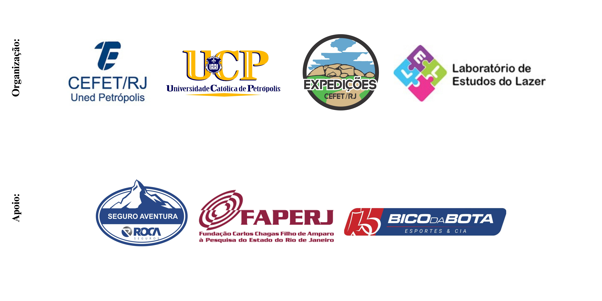

XIII Congresso Brasileiro de Atividades de Aventura
(CBAA)
VII Congresso Internacional de Atividades de Aventura
(CIAA)

TRABALHOS COMPLETOS: EIXO 5 - AVENTURA, NATUREZA E SUSTENTABILIDADE
PROTÓTIPO DE PAINEL PARA ATIVIDADES DE ESCALADA A PARTIR DE DCLT (DOWELED CROSS LAMINATED TIMBER) UM RELATO DE EXPERIÊNCIA
Antonio Henrique Simão dos Santos, Vanderlan Santos Mota, Adriano José Nogueira Lima, Geraldo Lira de Souza & Yago Pereira Souza
ECODESIGN E A BIOMIMÉTICA DE PRODUTOS NAS PRÁTICAS CORPORAIS DE AVENTURA COM MATERIAIS SUSTENTÁVEIS DA FLORESTA
Vanderlan Santos Mota, Jucicleia Rabelo de Jesus, Jefferson Jurema Silva, Antonio Henrique Simão dos Santos, Jandre Santiago Amorim de Araujo
ANÁLISE DA QUALIDADE AMBIENTAL E DO POTENCIAL TURÍSTICO DA GEOTRILHA FAROL DA LAJINHA NO PROJETO GEOPARQUE COSTÕES E LAGUNAS DO RIO DE JANEIRO
Bruno Batista de Negreiros, Rosangela Garrido Machado Botelho
A IMPORTÂNCIA DOS TRABALHADORES DO LAZER DE AVENTURA NA CONSERVAÇÃO E SAÚDE SOCIOAMBIENTAL O EXEMPLO DE BROTAS, SP
Marília Martins Bandeira, Olivia Ferreira Ribeiro
